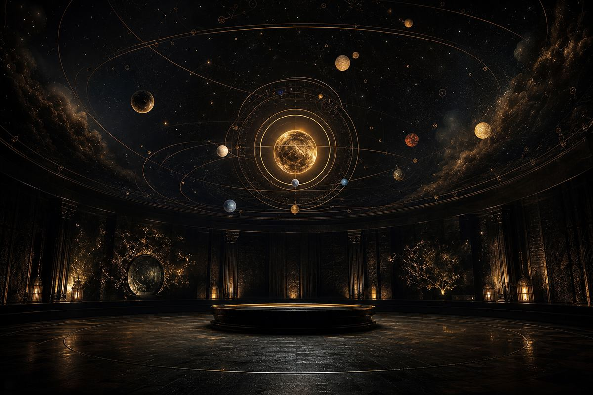
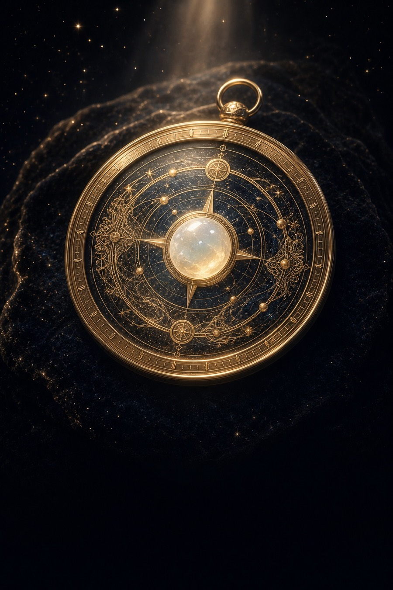
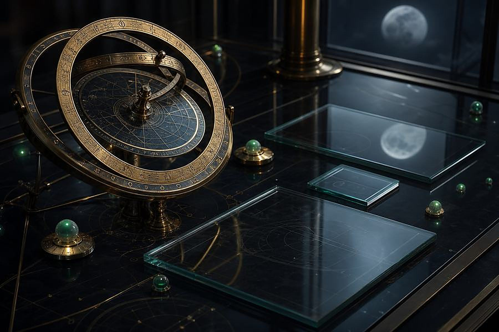

这份报告同时动用两套彼此独立的古老体系,观测同一个对象——你出生的那一刻。八字把那一刻拆成天干地支,读的是你内在的能量配置;星盘把同一刻的宇宙星位原样存档,读的是这份配置向外的投影。
中华黄河流域传承与西古地中海神学,两千年互不通信,却不约而同选了同一个坐标:出生时刻。所以我们不混用、不互相代劳——易理为主轴,星盘只做印证。两套独立体系在同一个结论上相遇,那个结论才值得你认真对待;而它们彼此打架的地方,往往就是你身上最值得琢磨的张力。
孤证不立,双盘互证。
下面每一条解读都标注了出处盘位,随时可以回头查证。

